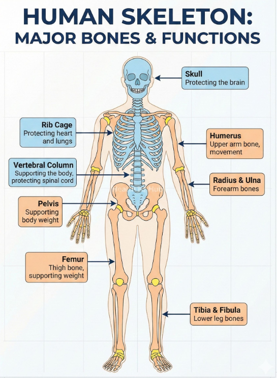

⚠ The Nutritional Stress Test
This station demonstrates two critical concepts: (1) the role of phosphorus as a structural mineral in skeletal integrity, and (2) the concept of an energy activation threshold required for metabolic processes to proceed. Both represent physiological consequences of nutritional deficiency.

Phosphorus in Bone: Phosphate (POₛ³⁻) combines with calcium to form hydroxyapatite [Ca₅(PO₄)₃OH], the primary mineral component of bone. Approximately 85% of the body’s phosphorus is found in the skeleton. Phosphate is the second most abundant mineral in the body (~1% of body weight).
Hypophosphatemia (serum phosphate <0.8 mmol/L) leads to osteomalacia in adults and rickets in children — conditions where insufficient mineral deposition creates soft, flexible, and easily deformed bones. The osteoid matrix (protein scaffold) is produced normally, but mineralization fails.
Regulatory hormones: PTH (parathyroid hormone), calcitriol (active Vitamin D), and FGF-23 (fibroblast growth factor 23) tightly regulate phosphate homeostasis through renal reabsorption and intestinal absorption modulation.
Basal Metabolic Rate (BMR): The minimum caloric intake required to sustain vital physiological functions at rest (breathing, circulation, thermoregulation, ion pumping). For an average adult, BMR is approximately 1,500–2,000 kcal/day.
When dietary intake falls significantly below BMR, the body transitions to a catabolic state: first utilizing glycogen stores (hepatic glycogenolysis), then mobilizing fat (lipolysis + beta-oxidation), and finally catabolizing muscle protein (gluconeogenesis). This leads to progressive impairment of all physiological systems, including intestinal absorption itself.
- Skeletal Support: Remove the Phosphorus Pillar to show structural collapse (models mineral deficiency-induced osteomalacia).
- Energy Gate: Accumulate sufficient energy (threshold = 3 units) to open the metabolic gate. Negative items (exercise, soda) deplete energy.
First, try removing the Phosphorus Pillar to observe structural failure. Then drag food items to accumulate energy and open the gate. Use negative-value items to deplete energy. Click "Burn Energy" to simulate metabolic consumption.
🔎 Check Your Understanding
1. What structural compound requires phosphorus for bone formation?
2. What metabolic pathway does the body activate FIRST when dietary energy falls below BMR?